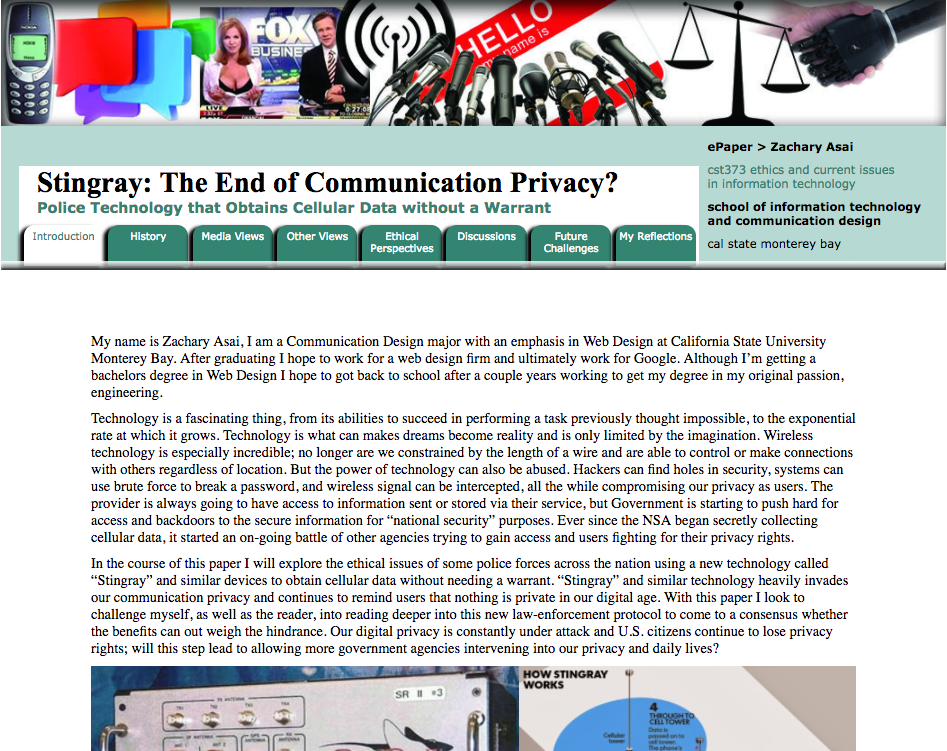

Investigates through an ethical perspective how communication technology affects our lives.
Discusses individual and institutional values represented through technological choices.
Using case studies and current events, explores such issues as intellectual property rights,
information access and privacy, and the digital divide.
Every week of the course students were required to create a scrapbook entry about a recent
news article with an ethical issue hanging in the balance. A summary of the article to give the
reader
